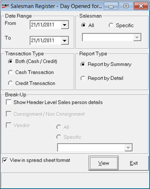

The Salesman Register provides information on sales made by all salesmen or a particular salesman, for a selected period. The vendor information of items sold by each salesman can be printed to evaluate the ease or difficulty with which each salesman sells goods.
How to reach: Reports > Sales > Salesperson Sales
The Salesman Register - Day window is displayed.

Date Range: By default, the From and To dates are the current Shoper date. You can enter any date range but the To date cannot be greater than the Shoper date.
Salesman: Select All or Specific. If Specific is selected choose the salesman from the list.
Transaction Type: Select Both (Cash/Credit), Cash Transaction or Credit Transaction to include the corresponding transactions.
Report Type: Select Report by Summary or Report by Detail
Break-Up:
Show Header Level Sales person details: Select to display the sales person details at the header level
Consignment / Non Consignment: Select to group the consignment items and non consignment items in the report.
Vendor: Select if the report has to be grouped vendor wise. Choose All or Specific. If you choose Specific, select the vendor from the list.
View in Spreadsheet Format: Select to view the report in a spreadsheet format.